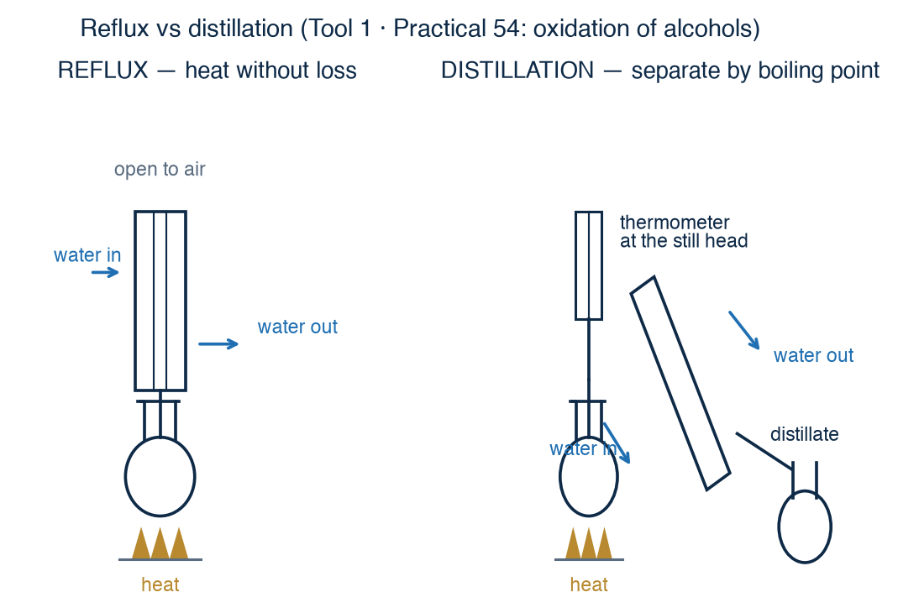

L1 Tools Skills Handbook · Module 1 · IB Chemistry (Guide 2025, p.33–34 aligned) · SL core · Student version
Every practical in all ten units of this course is built from a small set of core techniques. The guide expects you to show awareness of the purpose and practice of each one. Paper 1B regularly asks you to identify a technique, choose between pieces of apparatus, or spot the flaw in a procedure; your IA Research design criterion is marked on whether your methodology could be reproduced by someone else. This module is the toolbox for all three.
Every investigation starts with a risk assessment: for each substance and step, state the hazard, who or what is at risk, and the control that reduces the risk. In this course that also means: goggles and tied hair whenever anything is heated or reacts; fume cupboard whenever a toxic or irritating gas (NH3, Cl2, Br2, NO2) could be produced; gloves for toxic solids (Ba2+ compounds); teacher-only distance and a sand tray for energetic demos (thermite, screaming jelly baby); and dilution of residues with plenty of water before disposal — never return chemicals to stock bottles.
"Appropriate precision" means the instrument must match what the experiment needs — not the most precise available (Tool 3 explains the uncertainties behind this table).
| Variable | Typical apparatus | Typical uncertainty | Rule of thumb |
|---|---|---|---|
| Mass | 2-d.p. / 3-d.p. balance | ± 0.01 g / ± 0.001 g | 3-d.p. whenever the mass difference is small (hydrate x, P9) |
| Volume (accurate) | burette; pipette | ± 0.05 cm3; ± manufacturer | burette reads to 0.1 cm3, quote to 0.05 |
| Volume (approximate) | measuring cylinder | ± 0.5–1 cm3 | only where the value need not be exact |
| Temperature | thermometer, 1 °C divisions | ± 0.5 °C | digital probes give continuous data (Tool 2) |
| Time | stopwatch | reaction-time limited, ~± 0.5 s | clock reactions / colorimetry beat this (U6) |
| pH | pH probe / pH paper | ± 0.01 / ± 1 | probe + calibration buffer (P42) |
| Electric current | ammeter / multimeter | ± last digit | electrolysis & cells practicals (U9) |
Each entry: purpose → practice → watch out → where you meet it (practical numbers from the course practical framework, mapped to units).
| Technique | Practice that scores marks | Watch out | Met in |
|---|---|---|---|
| Preparing a standard solution | weigh accurately → dissolve in beaker → transfer with rinsings into volumetric flask → make up to the mark with drop-wise final additions → invert to mix | overshooting the graduation mark; not rinsing the beaker into the flask | P10 (U1), feeds every titration |
| Serial dilution | 10x steps with a pipette: 9 parts water + 1 part solution; each step uses the previous dilution | using the wrong dilution as stock; mixing up tubes | P41 pH scale (U8) |
| Drying to constant mass | heat → cool in desiccator → weigh → repeat until two consecutive masses agree within instrument uncertainty | weighing hot (convection); "constant" means within ± 0.001 g on a 3-d.p. balance | P9 hydrate x (U1) |
| Titration (acid–base, redox) | rinse burette with the titrant; pipette aliquot; indicator choice tied to the equivalence region; repeat to concordant titres (within ± 0.10 cm3) and average those only | rinsing the burette with water; averaging non-concordant titres; endpoint judgement is a random error source — note it in evaluation | P11, P12 (U1); redox in U9 |
| Reflux | boil for a prolonged time with a vertical condenser — nothing is lost while the reaction completes | confusing with distillation: reflux keeps everything; distillation removes the volatile component | P54 (U4/U9/U10) |
| Distillation | thermometer bulb level with the side-arm; collect the fraction boiling at the product's b.p. | thermometer in the liquid instead of the vapour; no anti-bumping granules | P1, P54 (U1, U10) |
| Chromatography (paper / TLC) | small spots, baseline above solvent level; Rf = distance moved by spot / distance moved by solvent front | solvent front must not reach the top; identity by Rf + reference under identical conditions | P1 (U1) |
| Calorimetry | known mass of water, insulated vessel, ΔT measured with a thermometer read to 0.1 °C; Q = mcΔT (data booklet) | heat loss = the classic systematic error — name it, insulate, and propose the control experiment | P32, P33 (U5) |
| Electrochemical cells | two half-cells joined by a salt bridge (filter paper + electrolyte); high-resistance voltmeter reads the cell EMF | bridge dries out; EMF measured under zero-current conditions | P50 (U9) |
| Colorimetry | select filter wavelength (complementary colour); blank first; calibration curve from standards, then interpolate the unknown | reading outside the calibrated range; turbid samples | P28, P40 (U2, U7) |
| Recrystallization & melting point | dissolve hot in minimum solvent → cool slowly → filter crystals, wash with cold solvent, dry; sharp m.p. range (≤ 2 °C) = purity evidence | too much solvent → low yield; broad/depressed m.p. = impurity | U4 organic chemistry |

Separation questions (P1B loves these): different boiling points → distillation; different solubilities → filtration + evaporation/crystallization; different attractions to stationary phase → chromatography; different magnetic/electrical properties → physical separation. Quantification questions: known-volume + indicator → titration; coloured species → colorimetry with a calibration curve; mass change on heating → gravimetric (constant mass) method.
| Skill | Typical P1B command |
|---|---|
| Technique identification | "State the technique used to obtain / separate …" |
| Apparatus choice & precision | "Explain why the student used a pipette rather than a measuring cylinder" |
| Method critique | "Outline why the value obtained was larger than the reference value" (systematic error in the technique) |
| Safety & environment | "Suggest one safety precaution … and one reason for it" |
Q1. Preparing 250 cm3 of a standard solution. Put these steps in a correct working order: (a) invert the stoppered flask several times; (b) add water to the graduation mark, finishing drop-wise; (c) weigh the primary standard accurately into a beaker; (d) dissolve and transfer with rinsings into the volumetric flask.
Q2. Apparatus choice. State the most appropriate apparatus, with a reason, for: (a) measuring out exactly 25.00 cm3 of acid for a titration; (b) measuring roughly 30 cm3 of water to make up a reaction mixture; (c) weighing the hydrated salt in the "x in CuSO4·xH2O" determination.
Q3. Concordant titres. A student's titration volumes: 24.10, 24.20, 24.15 and 26.80 cm3. (a) State which value should be excluded and why. (b) Calculate the mean titre to an appropriate precision.
Q4. Reflux or distillation? Oxidation of ethanol with acidified K2Cr2O7: (a) to obtain ethanal (b.p. 20 °C, volatile), (b) to obtain ethanoic acid (b.p. 118 °C). Name the technique for each, with one reason.
Q5. Separation scheme. A mixture of sand, sodium chloride and water. Outline, in order, how to recover pure dry sand and pure dry salt, naming each technique.
Q6. Safety. A class investigates the rate of Mg + excess 1.0 mol dm−3 HCl collecting H2 in a gas syringe. State two hazards and one control measure for each.
One sentence each: (1) Why must the burette be rinsed with the titrant, not water? (2) A P1B answer says "the thermometer should be placed in the liquid being distilled" — agree or disagree, and why?
Sources: IB Chemistry Guide 2025 (Tool 1, p.33–34); department practical framework Books 1–4 (practical numbers as mapped); TSM safety and skills sections.